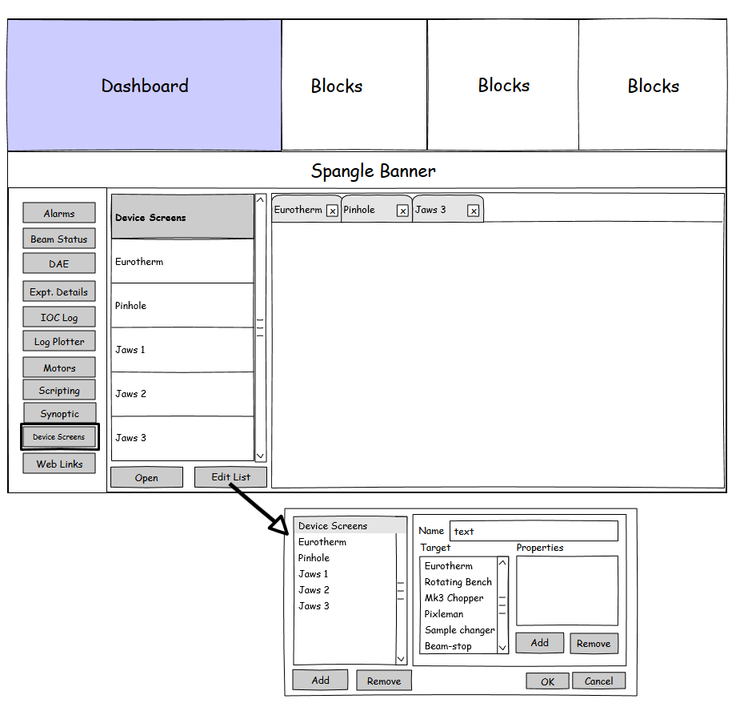

Opening an OPI Outside of a Synoptic
Names
The suggested name for this is ‘Device Screens’. We will change the terminology currently used in the synoptic from ‘Component’ to ‘Device’ too, for consistency (this avoids ambiguity with a component as part of a configuration).
Other ideas for names were:
Component Viewer
Components
Devices
Beam/SE Devices
Beam/SE Components
Target View
Component Targets
Target View
OPIs
Screens
GUI Design
The figure below shows a proposed layout for the GUI. This is designed as a first attempt layout, to be similar to the existing synoptic view and hence straightforward to implement. We need to consider how best to open up multiple OPIs on one screen, but this does not necessarily need to exist in the first iteration.

Note that the ‘Edit List’ dialogue will look different with the changes for automatically setting defaults and the new way of setting properties.
BlockServer Storage
The BlockServer will be responsible for saving a list of ‘Device Screens’. It is proposed that these are stored as a separate XML file in the configuration or component: NDXXXXX/configurations/my_config/device_screens.xml.
The XML structure will be similar to:
<devices>
<device>
<name>Eurotherm 1</name> <!-- The name given by the user -->
<key>Eurotherm</key> <!-- The type of device, should match that in opi_info.xml -->
<type>OPI</type>
<properties>
<property>
<key>EURO</key>
<value>EUROTHERM1</value>
</property>
</properties>
</device>
</devices>
A schema for the device screens will be required:
<complexType name="device">
<sequence>
<element name="name" type="string" maxOccurs="1"
minOccurs="1">
</element>
<element name="key" type="string" maxOccurs="1"
minOccurs="1">
</element>
<element name="type" type="tns:targettype" maxOccurs="1"
minOccurs="1">
</element>
<element name="properties" type="tns:targetproperties" maxOccurs="1" minOccurs="0"></element>
</sequence>
</complexType>
<simpleType name="targettype">
<restriction base="string">
<enumeration value="COMPONENT"></enumeration>
<enumeration value="OPI"></enumeration>
</restriction>
</simpleType>
<complexType name="targetproperty">
<sequence>
<element name="key" type="string"></element>
<element name="value" type="string"></element>
</sequence>
</complexType>
<complexType name="targetproperties">
<sequence>
<element name="property" type="tns:targetproperty" maxOccurs="unbounded" minOccurs="0"></element>
</sequence>
</complexType>
The device screens will be served up in the same way as the synoptics, JSON over Channel Access. Note the way PVs are named needs to take #1053 into account.
Synoptic changes
Changes should be made once this is complete to use the device screens within the synoptics. This should not be done until the device screens editor and BlockServer changes are completed and well tested. When implementing the changes this should be taken into account though, to make sure synoptics can easily make use of a device screen.